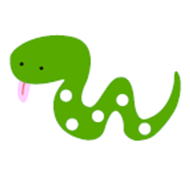
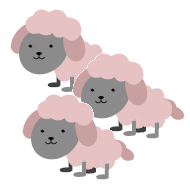
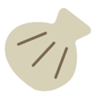
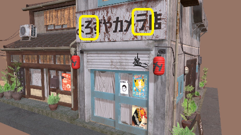
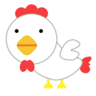
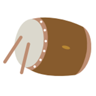
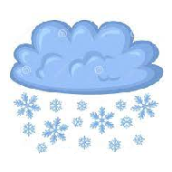

There are 25 questions in this test. 20 is a passing grade. 23 is an A.
You have one hour (60 minutes) to take the test. That gives you a little over
2 minutes for each question.
-
How do you write "STRAWBERRY" in Japanese?
ITIKO
- いちユ
- イチコ
- いちに
- トさこ
-
How do you write "PIGEON" in Japanese?
HATO
- はよ
- ハト
- ほと
- ルヒ
-
How do you write "SNAKE" in Japanese?
HEHI

- へト
- くへ
- へひ
- はヒ
-
How do you write "LOOFAH" in Japanese?
HETIMA
- へちま
- くチマ
- くちも
- へチク
-
How do you write "AIRPLANE" in Japanese?
HIKO UKI
- てこうき
- ひにつさ
- ヒコウキ
- トロワチ
-
How do you write "SHEEP" in Japanese?
HITUSI

- トシツ
- ヒうシ
- てつツ
- ひつし
-
How do you write "FIREFLY" in Japanese?
HOTARU
- ホタサ
- ほにる
- ほたる
- ハニユ
-
How do you write "SCALLOP" in Japanese?
HOTATE

- ホタテ
- ほにて
- ほたひ
- ハニチ
-
How do you write "HOT AIR BALLOON" in Japanese?
KIKIYU U
- キキユウ
- チチコワ
- ききゆつ
- ももこう
-
How do you write "CAR" in Japanese?
KURUMO
- へろま
- ケルチ
- クハテ
- くるも
-
What are the two syllables in this image?

- RO and TU
- RU and KU
- RO and 0U
- RU and NI
-
How do you write "CHICKEN" in Japanese?
NIWATORI

- にわとり
- テウトリ
- こわちり
- ニワイリ
-
How do you write "CHICKEN" in Japanese?
TIKIN

- チキン
- キチソ
- モチン
- モキソ
-
How do you write "MUSHROOM" in Japanese?
SI ITAKE
- ついたけ
- ツイケマ
- しいにサ
- シイタケ
-
How do you write "RICE CRACKER" in Japanese?
SEN HE I
- モンへト
- せんへい
- センへイ
- りんへり
-
How do you write "DRUM" in Japanese?
TA IKO

- たいこ
- ちいに
- にイロ
- ちイコ
-
How do you write "CLOCK" in Japanese?
TOKE I
- トイけ
- てりい
- とけい
- イヒト
-
How do you write "CHIMPANZEE" in Japanese?
TIN HAN SI
- テンルンツ
- チンハンシ
- テンハンツ
- チンルンシ
-
How do you write "FISH ROLL" in Japanese?
TIKUWA
- チクワ
- ちくわ
- テクウ
- さくろ
-
How do you write "BEE" in Japanese?
WATI
- わテ
- ウチ
- ねテ
- ワチ
-
How do you write "SNOW" in Japanese?
YUKI

- リキ
- ユも
- コキ
- ゆき
-
Which town was the site of the first nuclear bombings?
- Hichitori
- Hiroshima
- Nurugaza
- Nagasaki
-
What year was the first atom bomb dropped?
- 1943
- 1944
- 1945
- 1946
-
What is meaning of the famous call for "mizu"?
- Death
- Help
- Mama
- Water
-
Which of these is not a Japanese attitude related to war and nuclear bombs.?
- The people affected by the bombs are unclean.
- There should never be another war.
- Japan has a responsiblity to care for the hibakusha
- Nuclear bombs are only for detering worse conflicts.